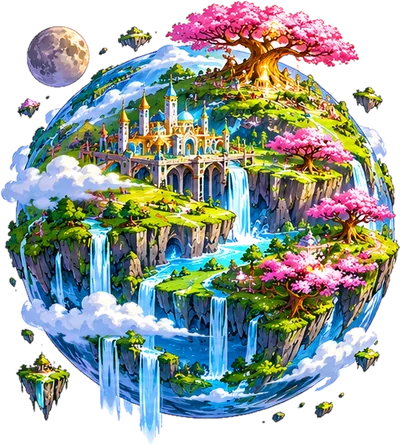

الكوكب الأول · مرافئ الضوءنُوارة
اركب «الرَّحّالة» مع وَمْض ونو. الفصل الأول «حدائق النور» جاهز للتجربة: خمسة ألغاز، لكل لغز ثلاث درجات.

الكوكب الأول · مرافئ الضوءاركب «الرَّحّالة» مع وَمْض ونو. الفصل الأول «حدائق النور» جاهز للتجربة: خمسة ألغاز، لكل لغز ثلاث درجات.